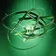
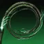
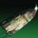
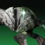

缠结
装备缚丝技能时，击杀受缚丝减益（割裂、悬停、瓦解）影响的敌方目标：
生成一枚缠结（基础生成冷却 12 秒）。
缚丝元素拾取物，具 ? 点构造体生命值，在地面最多留存 20 秒；5 米内可拾取，最多持有 20 秒。
攻击或投掷均会引爆，在 8 米内造成 346 [100] 伤害，两种方式均计为元素交互。
用「抓钩」钩住缠结完全返还手雷能量，并将自己拉向缠结。
装备缚丝技能时，击杀受缚丝减益（割裂、悬停、瓦解）影响的敌方目标：
生成一枚缠结（基础生成冷却 12 秒）。
缚丝元素拾取物，具 ? 点构造体生命值，在地面最多留存 20 秒；5 米内可拾取，最多持有 20 秒。
攻击或投掷均会引爆，在 8 米内造成 346 [100] 伤害，两种方式均计为元素交互。
用「抓钩」钩住缠结完全返还手雷能量，并将自己拉向缠结。
与普通缠结具有相同的抓钩交互表现，但仅能与抓钩交互。
持续 20 秒，每次抓钩刷新 5 秒；无法被摧毁或拾取。
瞄准 27 米（装备手雷「抓钩」时 32 米）内的抓钩缠结时，在 0.3 秒内将手雷技能覆盖为非攻势「抓钩」。
缚丝与棱镜分支可使用抓钩近战；棱镜术士需装备近战「神秘织针」。
连续 5 次抓取同一枚抓钩缠结后，单次持续时间刷新量降至 1 秒。
缚丝召唤物，搜寻 20? 米内的敌方目标并在 ? 米内跃向目标。
接触或跃起后引爆，在小范围内最高造成 366 [35] 伤害。
接触前丢失目标的线虫落地另寻战斗人员，而非自爆。
线虫造成的伤害计入生成来源；停栖后解除该继承关系。
术士专属互动：
未开始追踪目标的线虫飞行 14 米后返回停栖，最多停栖 5 只。
造成武器伤害或充能近战命中时逐只释放（释放间隔 0.5 秒），可在任意射程追踪目标。
一击击杀目标不会释放停栖的线虫。
提供 45% [25%] 伤害抗性，持续 10 秒。
施放任意超能技能时移除织造铠甲。
来自守护者的精准命中与近战攻击无视此伤害抗性。
敌方目标造成的伤害降低 40% [15%]。
持续 10 [5]（碎片「持续丝线」+5 [+2.5]）秒。
被悬停的目标无法移动、射击或使用技能；被悬停的势不可挡勇士陷入眩晕。
对：
被抬升至空中，可缓慢水平漂移并腰射开火（视角切换为第三人称），持续 2（碎片「持续丝线」+1）秒。
受瓦解的敌方目标在承受 40 点伤害后 0.25 秒释放 3 条追踪线，飞向 ? 米内的敌方目标（触发冷却 1.2 秒）。
每条追踪线造成 26 [4] 伤害并在命中时施加瓦解。
追踪线命中时将目标的瓦解持续时间刷新至初始时长（如初始为 9 秒则重置为 9 秒）。
缚丝武器造成伤害时：
施加瓦解。
使用手雷技能：
填装手持武器，并提供 +40? 操控性、+40 填装速度、0.925× 填装时长倍率与 +30 空中效率，持续 15 秒。
填装效果触发后有 4 秒内置冷却。
超能击杀敌方目标时：
在目标位置触发悬停爆裂，在 6 米内造成 108 [?] 伤害并施加悬停。

缚丝减益的基础持续时间延长约 50%。
受影响的技能与效果在各条目注明装备「持续丝线」时的具体增量。
触发冷却为 1? 秒。
造成伤害时：
获得手雷技能能量，回复量随伤害类型与单次伤害量递增。
切线手雷造成的伤害不触发回能。
2 秒内连续取得精准命中推进进度，满 100% 时：
对目标释放割裂爆裂，在 ? 米内对敌方目标施加割裂。
触发后有 4 秒冷却，冷却期间的精准命中不计入进度。
击杀回能后有 1? 秒冷却。
充能近战技能击杀时：
为缚丝武器提供瓦解弹药，持续 8 [5] 秒。
织造铠甲激活期间：
武器击杀生成一枚缠结。
拾取能量球时：
获得织造铠甲，持续 5 秒。
击杀被悬停的敌方目标时：
生成一枚能量球，提供 2.5% 超能能量。
生成能量球后有 10 秒内置冷却。
钩住最远 22 米内的目标或物体，造成 38 [?] 伤害并在接触时使敌方目标踉跄。
激活 1 秒内取消返还 50% 手雷能量。
钩住缠结或抓钩缠结时：
完全返还手雷技能充能，并获得持续 4 秒的「抓钩返还」——期间若抓钩结束可立即再次使用。
此时不触发护甲模组「手雷快速启动」。
抓钩近战（抓钩期间，或结束后最多 ? 秒内且速度仍够快时按［近战攻击］发动；计为手雷与近战技能伤害）：
造成 432 [61] 直击伤害，并在 4? 米内造成最高 432 [61] 范围伤害，施加瓦解并击退敌方目标。
直击命中的敌方近战突进失效 0.5 秒。
配合抓钩缠结发动时，护甲模组「点尸成金」提供的超能能量减少 50%；滞空期间抓钩与超能「丝线打击」的被动能量恢复均被禁用。
「抓钩」近战命中时：
生成 3 只线虫。
捕缚球弹道
投出一枚捕缚球，撞击释放爆炸并分裂次级捕缚球（直击分裂 2 枚，撞击表面分裂 3 枚）：
主球造成 190 [?] 伤害，并在 ? 米内对命中的敌方目标施加悬停。
次级捕缚球自动追击附近目标，每枚造成 81 [?] 伤害并在命中时施加悬停。
按住［手雷］消耗一次手雷技能充能：
获得「织者迷境」，持续 25 秒。
期间击杀敌方目标在目标位置触发悬停爆裂，在 6 米内造成 108 [?] 缚丝手雷伤害并施加悬停。
中型弹道 ?
投出一枚弹跳手雷，接触表面后不久引爆并在 6 米内造成 4 次溅射伤害，施加割裂，持续 10（碎片「持续丝线」+5）秒。
四次爆炸最大伤害：
第 1 次 178 ｜ 第 2 次 178 ｜ 第 3 次 222 ｜ 第 4 次 267 [?]。
任一敌方目标首次被爆炸命中时，额外承受 307 [?] 伤害。
按住［手雷］过充手雷：
第四次爆炸呈 X 形释放 4 枚子弹药，每枚最高造成 64 [?] 伤害并生成一枚缠结（无视缠结生成冷却）。
中型弹道
投掷后在半空中分裂为 3 枚弹体，每枚接触表面或目标时生成一只线虫。
按住［手雷］蓄力准备巢穴手雷：
接触表面时生成拥挤巢穴。
拥挤巢穴具 300 点构造体生命值，最长持续 17.5 秒；部署 1.5 秒后每秒消耗 6.7%（20 点）自身生命值。
部署时生成 3 只线虫，此后每 5 秒额外生成 1 只。
投掷弹体，在最多 9 名敌方目标或表面之间弹跳（目标间距需在 ? 米内）。
命中造成 427 [82] 伤害并施加割裂，持续 ?（碎片「持续丝线」+?）秒。
第一次弹跳伤害降低 18%，后续每次弹跳降低 42.5%。
缚丝分支专属：
接住线织尖刺时，期间每次击杀提供 2 秒织造铠甲，最多叠加至 10 秒。
伤害抗性：90% [45%] ｜ 基础持续：24.5 秒（或每秒消耗 4% 超能能量）
装备星相「诱捕猛击」时：
超能期间可重复使用诱捕猛击，每次消耗 4.5% 超能能量。
在空中按［空中移动］消耗职业技能能量：
向下俯冲并在落地时爆发，对 8 [6.5] 米内的敌方目标造成 61 [11] 伤害并施加悬停。
触发已装备职业技能的效果（装备星相「线织幽灵」时亦同步触发）。
每悬停一名敌方目标获得 4 秒织造铠甲，最多叠加至 20 秒。
使用职业技能时：
在原地生成一个缚丝诱饵。
诱饵具 175 点生命值，最多持续 12 秒；嘲讽附近的战斗人员，对战斗人员伤害具有 70% 伤害抗性。
自己与盟友对其造成的武器与技能伤害提高 150%。
诱饵耗尽生命值或 ? 米内有敌方目标接近时引爆：
在 ? 米内最高造成 600 [60 守护者 ｜ 121 物体] 伤害。
由敌方目标靠近触发爆炸时，额外生成 2 只线虫。
诱饵始终计为敌对目标，战斗人员、盟友与自己均可对其造成伤害，击破时不触发击杀判定。
装备此星相时，职业技能充能速度降为 0.6 倍。

摧毁一枚普通缠结时：
召唤一枚旋转缠结，搜寻 ? 米内的敌方目标并加速追击（最高 6 米/秒；判定计为抓钩缠结）。
旋转缠结持续 12 秒（具 ? 点构造体生命值），每 0.1 秒在 2? 米内造成 29 [?] 伤害，击杀释放瓦解投射物。
旋转缠结击杀计为缠结击杀，但其命中不计为缠结命中，也不计为技能伤害。
额外提供一次手雷技能充能。
使用「抓钩」或「抓钩」近战命中时：
生成一枚抓钩缠结。
抓钩附着于敌方目标或盟友时不生成。
若抓钩本身因钩中缠结或抓钩缠结而未消耗能量，则不重复生成。
固有 3 次近战技能充能。
向前突进 ? 米挥刃斩击：
对敌方目标造成 569 [105] 伤害并施加割裂。
在棱镜分支下装备时承受 0.7 倍充能速度惩罚。
伤害抗性：90% [50%] ｜ 基础持续：24 秒（或每秒消耗 4.167% 超能能量）
超能结束时补满 3 次近战技能充能。
轻攻击（消耗 3% 超能能量）：
打出强化「狂暴利刃」，造成 851 [210] 伤害（对被悬停的敌方目标伤害提高 25%），可无限连击。
基础攻速为每秒 3 次，连击 3 次后攻速提高 100%（使用重击或断连时清除加速）。
重击（消耗 10.5% 超能能量）：
掷出一对追踪的悬停弹体（冷却 3 秒），造成 143 × 2 [61] 直击伤害并在 ? 米内造成最高 608 × 2 [36] 溅射伤害与悬停。
轻攻击命中或受到伤害时各缩短 1 秒重击冷却。
刀剑击杀、近战击杀、偃月近战击杀、超能轻攻击击杀或使用终结技时：
升起战争旗帜，为自己与 10 米内的盟友提供增益。
旗帜基础持续 15 秒，最高叠加至 4 层。
20 米内有目标死亡、被自己击杀或被附近盟友击杀时累计计数，每累计 7 [2] 次提供 1 层；层数提高时延长持续时间（延长量递减）并缩短恢复脉冲间隔。
旗帜生效期间：
周期性恢复 20 点生命值。
近战伤害提高 100% [随层数变化]（PvP 各层增伤均为 [?%]）。
「剑刃之怒」伤害提高 40%，刀剑伤害提高 20%。
击杀受元素减益影响的敌方目标时：
提供 ?% 职业技能能量。
使用职业技能时：
释放一条最远向前飞行 30 米的缚丝鞭，自动索敌路径上的敌方目标，命中造成 61 [31] 伤害并施加悬停。

滑铲时按［近战技能］（消耗 50% 近战能量）：
跃升至空中，击退 ? 米内的敌方目标并造成 135 [66] 伤害。
空中再按［近战技能］（每次消耗 50% 近战能量）：
发射一组 4 枚瓦解弹，每枚对 ? 米内的敌方目标造成 171 [25.2] 伤害并施加瓦解；滞空期间可连续多次投掷。
施法动画期间对非近战伤害提供 25% 伤害抗性。
开火状态下无法在滑铲期间发动。
摧毁缠结时：
在缠结位置释放 3 次脉冲（每 2 秒一次），为 10? 米内的自己与盟友恢复 15 点生命值并赋予织造铠甲。
施放超能时：
为 ? 米内的盟友赋予织造铠甲。
织造铠甲激活期间：
近战技能基础充能速度额外提高 300% [200%]。
固有 3 次近战技能充能。
投出一枚追踪的缚丝飞针：
造成 505 [68] 伤害并施加瓦解，持续 ?（碎片「持续丝线」+?）[7（碎片「持续丝线」+2.5）] 秒。
在棱镜分支下装备时承受 0.7 倍充能速度惩罚。
伤害抗性：?% [53%]
释放 9 枚追踪飞针：
每枚命中造成 783 [?] 伤害并刺入目标或表面，历时 ? 秒后引爆转化为线虫。
引爆生成的线虫造成 368 [?] 伤害。
强化「抓钩」、「线虫手雷」、「束缚手雷」与「切线手雷」，具体强化效果见各手雷技能条目。
投掷的缠结不受重力影响，自动搜寻并附着于敌方目标。
缠结爆炸 1 秒后：
触发次级悬停爆炸，造成 324 [?] 伤害并对 6 米内的敌方目标施加悬停。
线虫击杀生成一枚缠结，并将缠结生成冷却缩短 1 秒。
使用职业技能时：
在身前生成 3 只线虫，并释放全部停栖的线虫。
线虫造成伤害时：
每次伤害实例提供 10% 职业技能能量。
伤害累计按显示伤害结算，受光等差惩罚。

在空中按［空中移动］消耗 20% 近战技能能量：
进入编织微步（需至少存有 1 次充能）。
处于编织微步期间：
隐形并获得 90% [90%] 伤害抗性（PvP 携带花火时降为 [60%]）。
每 0.5 秒生成 1 只停栖的线虫，每秒消耗 25% 近战技能能量。
退出编织微步时：
为自己与 ? 米内的盟友赋予织造铠甲；持续时间随处于微步中的时长由 2 秒递增至最高 20 秒（需持续停留 ? 秒）。
电弧之魂、时间裂隙传送门与线虫在此期间伤害降低 50%；期间无法开火、使用技能、复活盟友或拾取弹药与能量球。